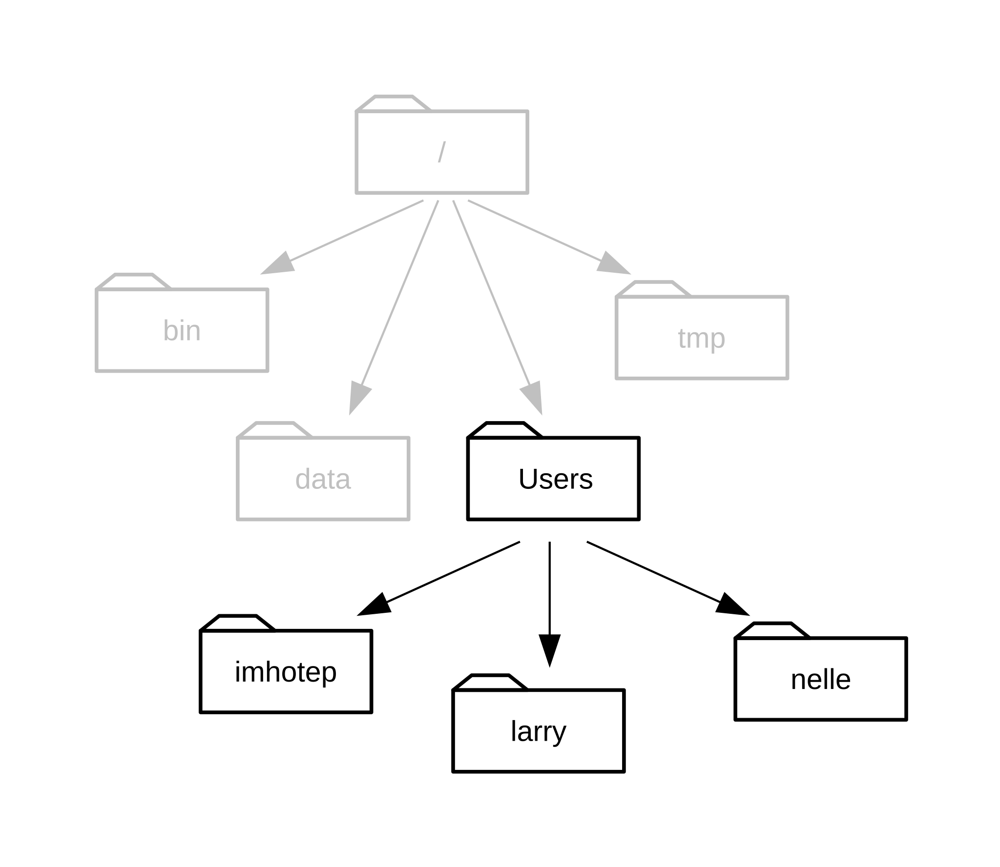
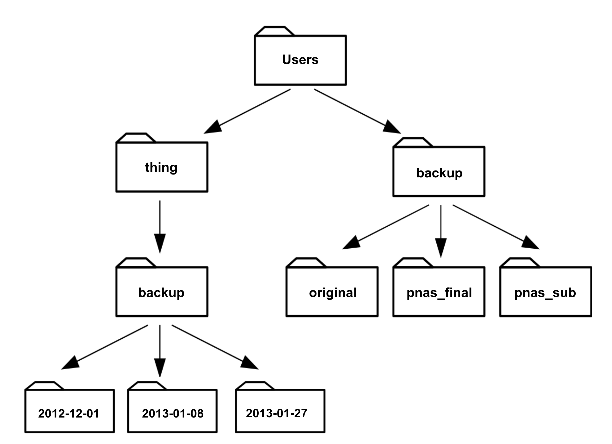
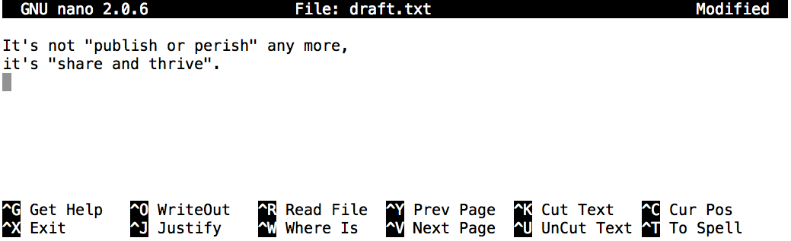
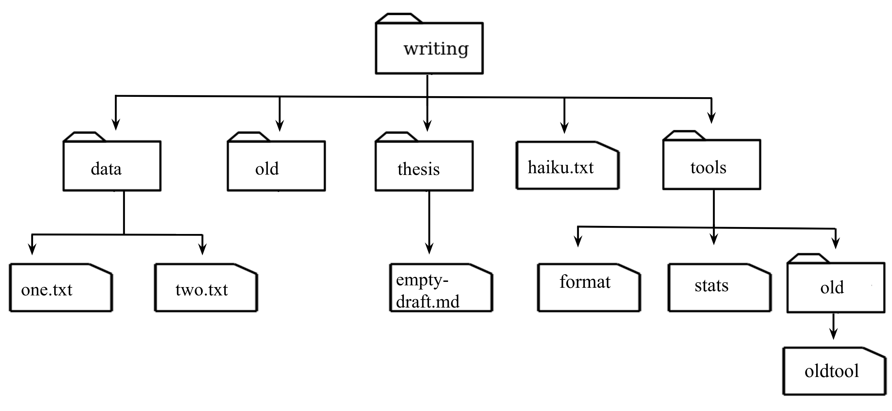
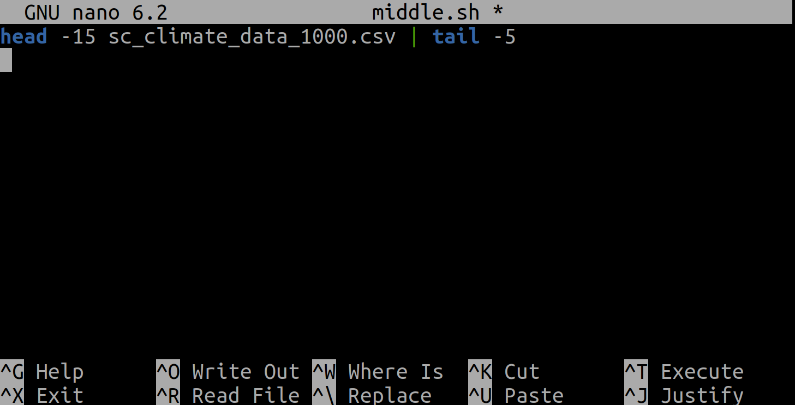
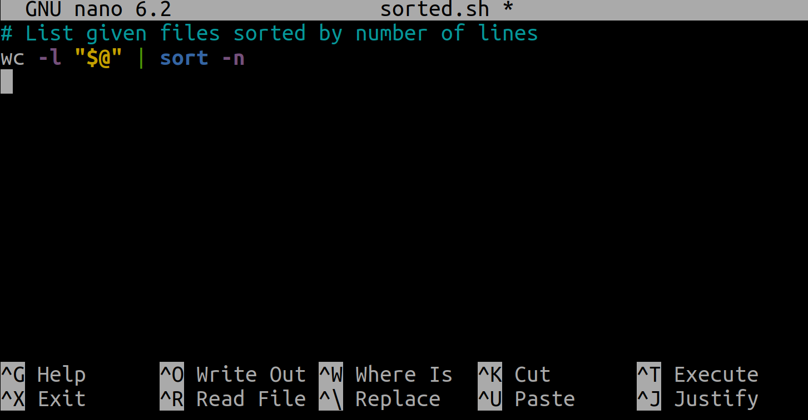

All in One View
Content from 1.0 Introducing the Shell
Last updated on 2026-07-10 | Edit this page
Overview
Questions
- What is a command shell and why would I use one?
Objectives
- Explain what the shell is and how it relates to graphical interfaces.
- Explain when and why command-line interfaces should be used instead of graphical interfaces.
The Bash shell a text-based program that interactively allows you to run other programs.
You’ll be familiar with the graphical way of dealing with computers, like the interfaces that Windows and Macs give you - sometimes called GUIs (graphical user interfaces). You run an application, it gives you windows and buttons and menus to interact with to access its functions and achieve a result. The Bash shell also gives you a means to access the functionality provided by your computer and other programs, but it does so in a different way. It allows you to type commands into your computer to get results instead, and when the command has finished running, it prints out the results. And then the shell allows you to type in another command… And so on.
Analogies
Imagine the shell a little like working with a voice assistant like Siri or Alexa. You ask your computer questions, and your computer responds with an answer.
The shell is called the shell because it encloses the machine’s operating system - which could be Windows, Mac OS X, or Linux - giving you a wrapper-like interface to interact with it. Another, more general way, of referring to the shell is the command line, since it provides an interface into which you type commands line-by-line.
Why use it?
So why use the Bash shell?
Capturing a process: Being able to capture how programs are run and in what order in a Bash script - and essentially automating how we run that process - is invaluable. It’s really helpful with making your pipelines reproducible: once you’ve defined this process in a script, you can re-run it whenever you want. This is both helpful for others to achieve the same results, but also for yourself perhaps six months from now, when it would be otherwise difficult to remember exactly what you did. What you are effectively doing is building a narrative - telling a story in recorded, programmatic form - of how you generated your research results.
Repetition: Bash is great at repeating the same commands many times. This could be renaming a hundred files in a certain way, or something more complex, such as running a data analysis program over many input data files, or running a program to generate a chart for every one of those output data files produced by that program.
Availability: Bash is available on different types of machines. You can already use the Bash shell on computers like Macs and those that run Linux, where it’s already installed, but you can also install and use it on Windows.
Using other computational resources: if you need to use another computational resource, such as a supercomputer to run your programs even faster, they almost exclusively use the shell.
Now on the flip side, it does have a steeper learning curve generally than using graphical programs. Applications and programs also need to work on the command line to be able to take advantage of it. But knowing just a little can be very useful, and in your careers you will very likely come across quite a few programs that have command line interfaces so it’s helpful to have some experience with it.
GUI vs The Shell
You have been given a set of CO2 emissions data for the UK
to analyse, located in the
shell-novice/shell/test_directory/co2_data folder within
the shell-novice lesson repository. If the notation
shell-novice/shell/test_directory/co2_data seems unfamiliar
to you, don’t worry, we will explain it in the next lesson.
When you navigate to the
shell-novice/shell/test_directory/co2_data folder, you’ll
see that it contains various subfolders with the YYYYMM
date format, as shown in the image below:

Upon inspecting these subfolders, you’ll notice an issue with the data labeling. The files have been incorrectly labeled as dicarbon monoxide, while they actually contain carbon dioxide emissions data for analysis.
Renaming multiple files:
Your task is to resolve this issue by renaming all these
files within the subfolders using your file explorer. For
example, you need to change c2o_202301_Aberdeen.csv to
co2_202301_Aberdeen.csv, and continue with this pattern for
all the files within the subfolders.
The solution is you probably got very bored very quickly, so feel free to stop doing this by hand. An important point is that the pure tedium of doing this sort of task by hand can lead to mistakes being made, for example data cleaning a large number of files in the GUI.
Let’s do the same thing, but with the shell. Open your terminal and navigate to the folder with the CO2 data in it with the following command:
Don’t worry if you don’t understand that command - it will be
explained in the next episode, but put simply cd changes
the directory the shell is in and the
/path/to/shell-novice/shell/test_directory/co2_data/ tells
it where to move.
Now type in the following command into the terminal and hit
enter/return
Now in your file explorer have a look and check that the files have been renamed.
There is quite a lot going on in this one line: - The
for loop for file in 2023*/* sets up a loop
through the files. - Within the loop,
new_file=${file/c2o/co2} command performs a text
substitution to get the correct name of the file and stores it in a
variable called new_file. - Finally, the mv command copies
the file to this new file with the updated name. With this one line we
have done a task which would have taken a considerable amount of time by
hand using the GUI (and not to mention been extremely boring).
Combining and cleaning files:
We can see that the data we have been given are in CSV
format. Each CSV file contains data for a specific city and is
categorized by the corresponding month. These files are structured to
start with the first line containing column headers, followed by the
data. To understand the structure, inspect one of the CSV files. An
example image illustrating the structure from a file named
co2_202301_Aberdeen.csv is provided below:

Now, imagine the computer program you were going to use for data analysis requires you to combine the data from all these CSV files into a single file, excluding the first line with field descriptions. Using a GUI, you’d need to open each file, cut every line except the first one, and paste it into a new file. This task of combining data from multiple files is time-consuming and prone to introducing errors.
Let’s tackle the same task, but this time using the shell. Return to your terminal (and if necessary, navigate to the folder containing the CO2 data with the same command as before):
Now type in the following command into the terminal and hit
enter/return
Now in your file explorer have a look and see that a new file has been created with all of the data. (Don’t worry about the contents of this command - it will become clear as we progress through the lesson).
- The shell lets you define repeatable workflows.
- The shell is available on systems where graphical interfaces are not.
Content from 1.1 Files and Directories
Last updated on 2026-07-27 | Edit this page
Overview
Questions
- How can I move around on my computer?
- How can I see what files and directories I have?
- How can I specify the location of a file or directory on my computer?
- What is the general structure of a shell command and how can I get help about the commands?
Objectives
- Explain the similarities and differences between a file and a directory.
- Translate an absolute path into a relative path and vice versa.
- Construct absolute and relative paths that identify specific files and directories.
- Use options and arguments to change the behaviour of a shell command.
- Demonstrate the use of tab completion and explain its advantages.
- Understand and describe the components of a shell command.
- Learn how to access help documentation for shell commands.
The part of the operating system responsible for managing files and directories is called the file system. It organizes our data into files, which hold information, and directories (also called “folders”, for example, on Windows systems), which hold files or other directories.
The shell has a notion of where you currently are, and as we’ll see, works by running programs at that location. For this reason, the most fundamental skills to using the shell are navigating and browsing the file system, so let’s take a look at some important commands that let us do these things.
To start exploring them, let’s open a shell window:
The dollar sign is a prompt, which represents our input interface to the shell. It shows us that the shell is waiting for input; your shell may show something more elaborate.
Working out who we are and where we are
Type the command whoami, then press the
Enter key (sometimes called Return) to send
the command to the shell. The command’s output is the identity of the
current user, i.e., it shows us who the shell thinks we are (yours will
be something different!):
OUTPUT
nelleSo what’s happening? When we type whoami the shell:
- Finds a program called
whoami - Runs that program
- Displays that program’s output (if there is any), then
- Displays a new prompt to tell us that it’s ready for more commands
Next, let’s find out where we are in our file system by running a
command called pwd (which stands for “print working
directory”). At any moment, our current working
directory is our current default directory. This is the
directory that the computer assumes we want to run commands in unless we
explicitly specify something else. Here, the computer’s response is
/Users/nelle, which is Nelle’s home
directory:
OUTPUT
/Users/nelleHome directory
The home directory path will look different on different operating
systems. On Linux it will look like /home/nelle, on Git
Bash on Windows it will look something like /c/Users/nelle,
and on Windows itself it will be similar to C:\Users\nelle.
Note that it may also look slightly different for different versions of
Windows.
Alphabet Soup
If the command to find out who we are is whoami, the
command to find out where we are ought to be called
whereami, so why is it pwd instead? The usual
answer is that in the early 1970s, when Unix - where the Bash shell
originates - was first being developed, every keystroke counted: the
devices of the day were slow, and backspacing on a teletype was so
painful that cutting the number of keystrokes in order to cut the number
of typing mistakes was actually a win for usability. The reality is that
commands were added to Unix one by one, without any master plan, by
people who were immersed in its jargon. The result is as inconsistent as
the roolz uv Inglish speling, but we’re stuck with it now.
Real typing timesavers
Save yourself some unnecessary keypresses!
Using the up and down arrow keys allow you to cycle through your previous commands - plus, useful if you forget exactly what you typed earlier!
We can also move to the beginning of a line in the shell by typing
^A (which means Control-A) and to the end using
^E. Much quicker on long lines than just using the
left/right arrow keys.
How file systems are organised
To understand what a “home directory” is, let’s have a look at how
the file system as a whole is organized. At the top is the root
directory that holds everything else. We refer to it using a
slash character / on its own; this is the leading slash in
/Users/nelle.
Let’s continue looking at Nelle’s hypothetical file system as an
example. Inside the / directory are several other
directories, for example:

So here we have the following directories:
-
bin(which is where some built-in programs are stored), -
data(for miscellaneous data files), -
Users(where users’ personal directories are located), -
tmp(for temporary files that don’t need to be stored long-term),
We know that our current working directory /Users/nelle
is stored inside /Users because /Users is the
first part of its name. Similarly, we know that /Users is
stored inside the root directory / because its name begins
with /.
Underneath /Users, we find one directory for each user
with an account on this machine, e.g.: /Users/imhotep,
/Users/larry, and ours in /Users/nelle, which
is why nelle is the last part of the directory’s name.

Slashes
Notice that there are two meanings for the / character.
When it appears at the front of a file or directory name, it refers to
the root directory. When it appears inside a name, it’s just a
separator.
Listing the contents of directories and moving around
But how can we tell what’s in directories, and how can we move around the file system?
We’re currently in our home directory, and can see what’s in it by
running ls, which stands for “listing” (the
... refers to other files and directories that have been
left out for clarity):
OUTPUT
shell-novice Misc Solar.pdf
Applications Movies Teaching
Desktop Music ThunderbirdTemp
Development Notes.txt VirtualBox VMs
Documents Pictures bin
Downloads Pizza.cfg mbox
...Of course, this listing will depend on what you have in your own home directory.
If you’re using Git Bash on Windows, you’ll find that it looks a
little different, with characters such as / added to some
names. This is because Git Bash automatically tries to highlight the
type of thing it is. For example, / indicates that entry is
a directory. There’s a way to also highlight this on Mac and Linux
machines which we’ll see shortly!
We need to get into the repository directory
shell-novice, so what if we want to change our current
working directory? Before we do this, pwd shows us that
we’re in /Users/nelle.
OUTPUT
/Users/nelleWe can use cd followed by a directory name to change our
working directory. cd stands for “change directory”, which
is a bit misleading: the command doesn’t change the directory, it
changes the shell’s idea of what directory we are in.
cd doesn’t print anything, but if we run
pwd after it, we can see that we are now in
/Users/nelle/shell-novice:
OUTPUT
/Users/nelle/shell-noviceIf we run ls once again now, it lists the contents of
/Users/nelle/shell-novice, because that’s where we now
are:
OUTPUT
assets code fig LICENSE shell
AUTHORS _config.yml files README.md _site
bin data Gemfile reference.md submodules
blurb.html _episodes Gemfile.lock requirements.txt
CITATION _episodes_rmd _includes setup.mdWhen you use the ls command, it displays the names of
files and folders in the current directory, arranging them neatly in
alphabetical order and columns (when there’s enough space). But
ls has some handy features! One of these features is the
-F flag. When you use the -F
flag, it adds a trailing / at the end of directory names.
It might seem minor, but it’s quite useful. The trailing /
helps you quickly identify which names are directories and which are
regular files. If you see a name with a / at the end, it
means it’s a directory.
OUTPUT
assets/ code/ fig/ LICENSE shell/
AUTHORS _config.yml files/ README.md _site/
bin/ data/ Gemfile reference.md submodules/
blurb.html _episodes/ Gemfile.lock requirements.txt
CITATION _episodes_rmd/ _includes/ setup.mdHere, we can see that this directory contains a number of
sub-directories. The names that don’t have trailing
slashes, like blurb.html, setup.md, and
requirements.txt, are plain old files. And note that there
is a space between ls and -F: without it, the
shell thinks we’re trying to run a command called ls-F,
which doesn’t exist.
What’s In A Name?
You may have noticed that all of these files’ names are “something
dot something”. This is just a convention: we can call a file
mythesis or almost anything else we want. However, most
people use two-part names most of the time to help them (and their
programs) tell different kinds of files apart. The second part of such a
name is called the filename extension, and indicates
what type of data the file holds: .txt signals a plain text
file, .pdf indicates a PDF document, .html is
an HTML file, and so on.
This is just a convention, albeit an important one. Files contain bytes: it’s up to us and our programs to interpret those bytes according to the rules for PDF documents, images, and so on.
Naming a PNG image of a whale as whale.mp3 doesn’t
somehow magically turn it into a recording of whalesong, though it
might cause the operating system to try to open it with a music
player when someone double-clicks it.
For this exercise, we need to change our working directory to
shell-novice, and then shell (within the
shell-novice directory). As we have already used cd to move
into shell-novice we can get to shell by using
cd again:
Note that we are able to add directories together by using
/. Now if we view the contents of that directory:
OUTPUT
shell-novice-data.zip test_directory/Note that under Git Bash in Windows, the / is appended
automatically.
Now let’s take a look at what’s in the directory
test_directory, by running
ls -F test_directory. So here, we’re giving the shell the
command ls with the arguments
-F and test_directory. The first argument is
the -F flag we’ve seen before. The second argument — the
one without a leading dash — tells ls that we want
a listing of something other than our current working directory:
OUTPUT
co2_data/ molecules/ pizza.cfg
creatures/ north-pacific-gyre/ solar.pdf
data/ notes.txt writing/The output shows us that there are some files and sub-directories. Organising things hierarchically in this way helps us keep track of our work: it’s a bit like using a filing cabinet to store things. It’s possible to put hundreds of files in our home directory, for example, just as it’s possible to pile hundreds of printed papers on our desk, but it’s a self-defeating strategy.
Notice, by the way, that we spelled the directory name
test_directory, and it doesn’t have a trailing slash.
That’s added to directory names by ls when we use the
-F flag to help us tell things apart. And it doesn’t begin
with a slash because it’s a relative path - it tells
ls how to find something from where we are, rather than
from the root of the file system. If we run
ls -F /test_directory (with a leading slash) we
get a different response, because /test_directory is an
absolute path:
OUTPUT
ls: /test_directory: No such file or directoryThe leading / tells the computer to follow the path from
the root of the file system, so it always refers to exactly one
directory, no matter where we are when we run the command. In this case,
there is no data directory in the root of the file
system.
Typing ls -F test_directory is a bit painful, so a handy
shortcut is to type in the first few letters and press the TAB
key, for example:
Pressing TAB, the shell automatically completes the directory name:
This is known as tab completion on any matches with those first few letters. If there are more than one files or directories that match those letters, the shell will show you both — you can then enter more characters (then using TAB again) until it is able to identify the precise file you want and finish the tab completion.
Let’s change our directory to test_directory:
We know how to go down the directory tree: but how do we go up? We
could use an absolute path,
e.g. cd /Users/nelle/shell-novice/novice/shell.
but it’s almost always simpler to use cd .. to go up one
level:
OUTPUT
/Users/nelle/shell-novice/novice/shell/test_directory.. is a special directory name meaning “the directory
containing this one”, or more succinctly, the parent of
the current directory.
OUTPUT
/Users/nelle/shell-novice/novice/shell/Let’s go back into our test directory:
The special directory .. doesn’t usually show up when we
run ls. If we want to display it, we can give
ls the -a flag:
OUTPUT
./ co2_data/ data/ north-pacific-gyre/ pizza.cfg writing/
../ creatures/ molecules/ notes.txt solar.pdf-a stands for “show all”; it forces ls to
show us file and directory names that begin with ., such as
.. (which, if we’re in
/Users/nelle/shell-novice/novice/shell/test_directory,
refers to the /Users/nelle/shell-novice/novice/shell
directory). As you can see, it also displays another special directory
that’s just called ., which means “the current working
directory”. It may seem redundant to have a name for it, but we’ll see
some uses for it soon.
Another handy feature is that we can reference our home directory
with ~, e.g.:
OUTPUT
assets blurb.html _config.yml _episodes_rmd Gemfile reference.md
AUTHORS CITATION data fig LICENSE requirements.txt
bin code _episodes files README.md shellWhich again shows us our repository directory.
Note that ~ only works if it is the first character in
the path: here/there/~/elsewhere is not
/Users/nelle/elsewhere.
Special Names
The special names . and .. don’t belong to
ls; they are interpreted the same way by every program. For
example, if we are in /Users/nelle/shell-novice, the
command ls .. will give us a listing of
/Users/nelle, and the command cd .. will take
us back to /Users/nelle as well.
How ., .. and ~ behave is a
feature of how Bash represents your computer’s file system, not any
particular program you can run in it.
Understanding the Shell Command Syntax and Getting Help
Let’s make using shell commands easier by understanding their syntax and how to get help when you need it. We’ll break it down step by step.
Command Structure
We have now encountered commands, options, and arguments, but it is perhaps useful to formalise some terminology. Consider the command below as a general example of a command, which we will dissect into its component parts:
A typical shell command consists of three main components:

-
lsis the command you want to run. So this is the action you want to perform. -
-Fis an option, which allows you to modify the behavior of the commandls. Options can be single-letter (short options) prefixed with a single dash (-) or longer and more descriptive (long options) with two dashes (--). For example, here-Fis a short option, and--formatis its long form. Long options provide a more human-readable way to modify command behavior. Note that some options, like-n, always require an argument to work. If you use an option that needs an argument without providing one, the command will report an error. -
/is an argument or sometimes referred to as a parameter that provides additional pieces of information that a command might require. Basically, arguments tell the command what to operate on, like files and directories or other data. In our example, the/specifically denotes the root directory of the filesystem. While the terms argument and parameter are often used interchangeably, they can have subtle differences in computer programming jargon, as explained on Wikipedia.
In addition to options and arguments, you may encounter
switches or flags in commands. These
are special types of options that can be used with or without arguments,
essentially acting as on/off switches for specific features. For
example, using -F in a command can modify the output
format, and it is a special type of option known as a
flag.
Moreover, you can combine multiple short options in a single command.
For instance, the command ls -Fa combines the
-F and -a options. This technique, known as
concatenation, allows you to provide multiple options
in a concise manner, making your commands more efficient. Importantly,
the order of options in concatenation is generally not important, so you
could also write the command as ls -aF.
Finding Help
Nobody expects you to memorize everything about commands. That’s where getting help comes in handy. You have two common ways to get guidance on a command and its options:
-
Using
--help: The--helpoption is widely supported in Bash, providing detailed information on how to use commands and programs. You can apply the--helpoption to a command (available on Linux and Git Bash), as shown below:OUTPUT
Usage: ls [OPTION]... [FILE]... List information about the FILEs (the current directory by default). Sort entries alphabetically if none of -cftuvSUX nor --sort is specified. Mandatory arguments to long options are mandatory for short options too. -a, --all do not ignore entries starting with . -A, --almost-all do not list implied . and .. --author with -l, print the author of each file -b, --escape print C-style escapes for non-graphic characters --block-size=SIZE with -l, scale sizes by SIZE when printing them; e.g., '--block-size=M'; see SIZE format below -B, --ignore-backups do not list implied entries ending with ~ -c with -lt: sort by, and show, ctime (time of last modification of file status information); with -l: show ctime and sort by name; otherwise: sort by ctime, newest first -C list entries by columns --color[=WHEN] colorize the output; WHEN can be 'always' (default if omitted), 'auto', or 'never'; more info below -d, --directory list directories themselves, not their contents -D, --dired generate output designed for Emacs' dired mode -f do not sort, enable -aU, disable -ls --color -F, --classify append indicator (one of */=>@|) to entries --file-type likewise, except do not append '*' --format=WORD across -x, commas -m, horizontal -x, long -l, single-column -1, verbose -l, vertical -C --full-time like -l --time-style=full-iso ... ... ... -
Using
man: Themancommand (available on Linux and macOS), short for ‘manual’, provides comprehensive documentation for most commands and programs. To access the manual for a specific command, simply usemanfollowed by the command’s name, such as:OUTPUT
LS(1) User Commands LS(1) NAME ls - list directory contents SYNOPSIS ls [OPTION]... [FILE]... DESCRIPTION List information about the FILEs (the current directory by default). Sort entries alphabetically if none of -cftuvSUX nor --sort is specified. Mandatory arguments to long options are mandatory for short options too. -a, --all do not ignore entries starting with . -A, --almost-all do not list implied . and .. --author with -l, print the author of each file -b, --escape print C-style escapes for nongraphic characters --block-size=SIZE with -l, scale sizes by SIZE when printing them; e.g., '--block-size=M'; see SIZE format below -B, --ignore-backups do not list implied entries ending with ~ -c with -lt: sort by, and show, ctime (time of last modification of file status information); with -l: show ctime and sort by name; otherwise: sort by ctime, newest first Manual page ls(1) line 1 (press h for help or q to quit)
Once you’re inside the manual, you might see a message like “Manual page ls(1) line 1 (press h for help or q to quit)” at the end of the page. Don’t worry; this message is there to help you. To navigate the manual, you can press ‘h’ for help if you need assistance or ‘q’ to quit and go back to your command prompt when you’re done reading.
Exercises

Challenge 1: Relative path resolution
If pwd displays /Users/thing, what will
ls ../backup display?
../backup: No such file or directory2012-12-01 2013-01-08 2013-01-272012-12-01/ 2013-01-08/ 2013-01-27/original pnas_final pnas_sub
4 is correct. ls shows the contents of
the path you give it, and ../backup means “Go up one level,
then into a directory called backup”.
Challenge 2: ls reading
comprehension
If pwd displays /Users/backup, and
-r tells ls to display things in reverse
order, what command will display:
OUTPUT
pnas-sub/ pnas-final/ original/ls pwdls -r -Fls -r -F /Users/backup- Either #2 or #3 above, but not #1.
4 is correct. The current directory (as shown by
pwd) is /Users/backup, so ls will
give the same result with or without /Users/backup.
Then, in order to get the output in reverse order, and with a
/ after the directories, we need the -r and
-F flags.
- The file system is responsible for managing information on the disk.
- Information is stored in files, which are stored in directories (folders).
- Directories can also store other directories, which then form a directory tree.
-
cd [path]changes the current working directory. -
ls [path]prints a listing of a specific file or directory;lson its own lists the current working directory. -
pwdprints the user’s current working directory. -
/on its own is the root directory of the whole file system. - Most commands take options (flags) that begin with a
-. - A relative path specifies a location starting from the current location.
- An absolute path specifies a location from the root of the file system.
- Directory names in a path are separated with
/on Unix, but\on Windows. -
.on its own means “the current directory”;..means “the directory above the current one”. -
--helpis an option supported by many bash commands, and programs that can be run from within Bash, to display more information on how to use these commands or programs. -
man [command]displays the manual page for a given command.
Content from 1.2 Creating Things
Last updated on 2026-07-27 | Edit this page
Overview
Questions
- How can I create, copy, and delete files and directories?
- How can I display the contents of the files?
Objectives
- Create new directories, also known as folders.
- Create files within directories using an editor or by copying and renaming existing files.
- Display the contents of a file using the command line.
- Delete specified files and/or directories.
We now know how to explore files and directories, but how do we create them in the first place?
First, let’s check where we are:
OUTPUT
/Users/nelle/shell-novice/shell/test_directoryIf you’re not in this directory, use the cd command to
navigate to it as covered in the last lesson, for example:
Creating a new directory
Now let’s use ls -F to see what our test directory
contains:
OUTPUT
co2_data/ data/ north-pacific-gyre/ pizza.cfg writing/
creatures/ molecules/ notes.txt solar.pdfLet’s create a new directory called thesis using the
command mkdir thesis (which has no output):
As you might (or might not) guess from its name, mkdir
means “make directory”. Since thesis is a relative path
(i.e., doesn’t have a leading slash), the new directory is created in
the current working directory:
OUTPUT
co2_data/ data/ north-pacific-gyre/ pizza.cfg thesis/
creatures/ molecules/ notes.txt solar.pdf writing/However, there’s nothing in it yet - this will show no output:
Creating a new text file
Now we’ll create a new file using a text editor in this new directory.
Let’s first change our working directory to thesis using
cd, and then we’ll use the Nano editor to
create a text file called draft.txt, and then save it in
that directory.
We add a filename after the nano command to tell it that
we want to edit (or in this case create) a file.
Now, let’s type in a few lines of text, for example:

Once we have a few words, to save this data in a new
draft.txt file we then use Control-O (pressing
Control and the letter O at the same time),
and then press Enter to confirm the filename.
Once our file is saved, we can use Control-X to quit the
editor and return to the shell.
Which Editor?
When we say, “nano is a text editor,” we really do mean
“text”: it can only work with plain character data, not tables, images,
or any other human-friendly media. We use it in examples because almost
anyone can drive it anywhere without training, but please use something
more powerful for real work.
On Windows, you may wish to use Notepad++. A more powerful example is Microsoft’s VSCode. It’s a fairly standard text editor that can be installed on Windows, Mac or Linux but also has some handy features like code highlighting that make it easy to write scripts and code. Similar editors exist like Atom, a highly customisable text editor which also runs on these platforms.
Your choice of editor will depend on the size of project you’re working on, and how comfortable you are with the terminal.
nano doesn’t leave any output on the screen after it
exits, but ls now shows that we have created a file called
draft.txt:
Now we’ve saved the file, we can use ls to see that
there is a new file in the directory called draft.txt:
OUTPUT
draft.txtWe can use the shell on its own to take a look at its contents using
the cat command (which we can use to print the contents of
files):
OUTPUT
It's not "publish or perish" any more,
it's "share and thrive".Quick Note
You can also use nano without
specifying a filename initially. In this case, you will be prompted to
enter the path and filename when you save your work inside the buffer.
This allows you to start typing and editing without deciding on a
filename right away.
Deleting files and directories
Now, let’s assume we didn’t actually need to create this file. We can
delete it by running rm draft.txt:
This command removes files (rm is short for “remove”).
If we run ls again, its output is empty once more, which
tells us that our file is gone:
Deleting Is Forever
The Bash shell doesn’t have a trash bin that we can recover deleted files from. Instead, when we delete files, they are unhooked from the file system so that their storage space on disk can be recycled. Tools for finding and recovering deleted files do exist, but there’s no guarantee they’ll work in any particular situation, since the computer may recycle the file’s disk space right away.
But what if we want to delete a directory, perhaps one that already
contains a file? Let’s re-create that file and then move up one
directory using cd ..:
OUTPUT
/Users/nelle/shell-novice/test_directory/thesisOUTPUT
draft.txtOUTPUT
/Users/nelle/shell-novice/shell/test_directoryIf we try to remove the entire thesis directory using
rm thesis, we get an error message:
ERROR
rm: cannot remove `thesis': Is a directoryOn a Mac, it may look a bit different
(rm: thesis: is a directory), but means the same thing.
This happens because rm only works on files, not
directories. The right command is rmdir, which is short for
“remove directory”. It doesn’t work yet either, though, because the
directory we’re trying to remove isn’t empty (again, it may look a bit
different on a Mac):
ERROR
rmdir: failed to remove `thesis': Directory not emptyThis little safety feature can save you a lot of grief, particularly
if you are a bad typist. To really get rid of thesis we
must first delete the file draft.txt:
The directory is now empty, so rmdir can delete it:
With Great Power Comes Great Responsibility
Removing the files in a directory just so that we can remove the
directory quickly becomes tedious. Instead, we can use rm
with the -r flag (which stands for “recursive”):
This removes everything in the directory, then the directory itself.
If the directory contains sub-directories, rm -r does the
same thing to them, and so on. It’s very handy, but can do a lot of
damage if used without care.
Renaming and moving files and directories
Let’s create that directory and file one more time.
OUTPUT
/Users/user/shell-novice/shell/test_directoryAgain, put anything you like in this file (note we’re giving the
thesis path to nano as well as the
draft.txt filename, so we create it in that directory):
OUTPUT
draft.txtdraft.txt isn’t a particularly informative name, so
let’s change the file’s name using mv, which is short for
“move”:
The first parameter tells mv what we’re “moving”, while
the second is where it’s to go. In this case, we’re moving
thesis/draft.txt (the file draft.txt in the
thesis directory) to thesis/quotes.txt (the
quotes.txt again in the thesis directory),
which has the same effect as renaming the file. Sure enough,
ls shows us that thesis now contains one file
called quotes.txt:
OUTPUT
quotes.txtJust for the sake of inconsistency, mv also works on
directories — there is no separate mvdir command.
Let’s move quotes.txt into the current working
directory. We use mv once again, but this time we’ll just
use the name of a directory as the second parameter to tell
mv that we want to keep the filename, but put the file
somewhere new. (This is why the command is called “move”.) In this case,
the directory name we use is the special directory name .
that we mentioned earlier.
The effect is to move the file from the directory it was in to the
current working directory. ls now shows us that
thesis is empty:
Further, ls with a filename or directory name as a
parameter only lists that file or directory. We can use this to see that
quotes.txt is still in our current directory:
OUTPUT
quotes.txtCopying files
The cp command works very much like mv,
except it copies a file instead of moving it. We can check that it did
the right thing using ls with two paths as parameters —
like most Unix commands, ls can be given thousands of paths
at once:
OUTPUT
quotes.txt thesis/quotations.txtTo prove that we made a copy, let’s delete the
quotes.txt file in the current directory and then run that
same ls again (we can get to this command by pressing the
up arrow twice).
ERROR
ls: cannot access quotes.txt: No such file or directory
thesis/quotations.txtThis time it tells us that it can’t find quotes.txt in
the current directory, but it does find the copy in thesis
that we didn’t delete.
Exercises
Challenge 1: Renaming files
Suppose that you created a .txt file in your current
directory to contain a list of the statistical tests you will need to do
to analyze your data, and named it: statstics.txt
After creating and saving this file you realize you misspelled the filename! You want to correct the mistake, which of the following commands could you use to do so?
cp statstics.txt statistics.txtmv statstics.txt statistics.txtmv statstics.txt .cp statstics.txt .
2 is the best choice. Passing mv or
cp . as a destination moves or copies without
renaming, so the spelling mistake won’t be fixed.
Both 1 and 2 will leave you with a
file called statistics.txt at the end, but if you use
cp it will be a copy, and you’ll still have your
incorrectly-named original.
Challenge 2: Moving and Copying
What is the output of the closing ls command in the
sequence shown below?
OUTPUT
/Users/jamie/dataOUTPUT
proteins.datBASH
$ mkdir recombine
$ mv proteins.dat recombine
$ cp recombine/proteins.dat ../proteins-saved.dat
$ lsproteins-saved.dat recombinerecombineproteins.dat recombineproteins-saved.dat
The correct answer is 2. The commands showed the
directory contains a single file named proteins.dat, then
created a new directory called recombine, moved the
original proteins.dat file into it, and finally copied
proteins.dat into the directory above the current
one as proteins-saved.dat.
So as it’s in the directory above the current one (..),
it won’t show up when you do ls in the current
directory.
Challenge 3: Organizing Directories and Files
Jamie is working on a project and she sees that her files aren’t very well organized:
OUTPUT
analyzed/ fructose.dat raw/ sucrose.datThe fructose.dat and sucrose.dat files
contain output from her data analysis. What command(s) covered in this
lesson does she need to run so that the commands below will produce the
output shown?
OUTPUT
analyzed/ raw/OUTPUT
fructose.dat sucrose.datls lists the contents of the current directory, whilst
ls analyzed lists the contents of the analyzed
directory.
So we need to move the files fructose.dat and
sucrose.dat out of the current directory, and into the
analyzed directory, which we do with mv.
You should get an error and the command does nothing. When passing 3 or more arguments, the last one needs to be a directory.
However,
Will not fail even though both of the arguments are existing files -
it will copy the contents of intro.txt over the
contents of methods.txt. So be careful!
- Command line text editors let you edit files in the terminal.
- You can open up files with either command-line or graphical text editors.
-
nano [path]creates a new text file at the location[path], or edits an existing one. -
cat [path]prints the contents of a file. -
rmdir [path]deletes an (empty) directory. -
rm [path]deletes a file,rm -r [path]deletes a directory (and contents!). -
mv [old_path] [new_path]moves a file or directory from[old_path]to[new_path]. -
mvcan be used to rename files, e.g.mv a.txt b.txt. - Using
.inmvcan move a file without renaming it, e.g.mv a/file.txt b/.. -
cp [original_path] [copy_path]creates a copy of a file at a new location.
Content from 1.3 Wildcards, Pipes and Filters
Last updated on 2026-07-27 | Edit this page
Overview
Questions
- How can I combine existing commands to do new things?
Objectives
- Capture a command’s output in a file using redirection.
- Use redirection to have a command use a file’s contents instead of keyboard input.
- Add commands together in a sequence using pipes, so output of one command becomes input of another.
- Explain what usually happens if a program or pipeline isn’t given any input to process.
- Explain Unix’s ‘small pieces, loosely joined’ philosophy.
Now that we know a few basic commands, we can finally look at the shell’s most powerful feature: the ease with which it lets us combine existing programs in new ways. One way we can use programs together is to have the output of one command captured in a file, and use that file as the input to another command. There are different approaches to achieve this, and we’re going to explain two of them while tackling a common challenge: finding the file with the fewest lines in a directory.
Combining Commands: File Operations with Wildcards
We’ll start with a directory called data, which is in
the shell-novice/data directory, one directory up from
test_directory. i.e. from test_directory:
Doing ls shows us three files in this directory:
OUTPUT
sc_climate_data_1000.csv sc_climate_data_10.csv sc_climate_data.csvThe data in these files is taken from a real climate science research project that is looking into woody biomass yields. The files are as follows:
- sc_climate_data.csv: the entire 20MB data set.
- sc_climate_data_1000.csv: a subset of the entire data, but only 1000 data rows.
- sc_climate_data_10.csv: a much smaller subset with only 10 rows of data.
We’ll largely be working on the 10-row version, since this allows us to more easily reason about the data in the file and the operations we’re performing on it.
Why not just use the entire 20MB data set?
Running various commands over a 20MB data set could take some time. It’s generally good practice when developing code, scripts, or just using shell commands, to use a representative subset of data that is manageable to start with, in order to make progress efficiently. Otherwise, we’ll be here all day! Once we’re confident our commands, code, scripts, etc. work the way we want, we can then test them on the entire data set.
The .csv extension indicates that these files are in
Comma Separated Value
format, a simple text format that specifies data in columns separated by
commas with lines in the file equating to rows.
Let’s run the command wc *.csv:
-
wcis the “word count” command, it counts the number of lines, words, and characters in files. - The
*in*.csvmatches zero or more characters, so the shell turns*.csvinto a complete list of.csvfiles:
OUTPUT
1048576 1048577 21005037 sc_climate_data.csv
11 12 487 sc_climate_data_10.csv
1001 1002 42301 sc_climate_data_1000.csv
1049588 1049591 21047825 totalFor the challenge at hand—finding the file with the fewest lines—we
often need to pass multiple filenames to a single command or work with
filenames that match a given pattern. This is where
wildcards come into play. There are various ways to use
wildcards, and for now, we’ll focus on two standard wildcards:
* (asterisk) and ? (question mark) that are
commonly used with the shell for pattern matching.
*is a standard wildcard that matches zero or more characters, so*.csvmatchessc_climate_data.csv,sc_climate_data_10.csv, and so on. On the other hand,sc_climate_data_*.csvonly matchessc_climate_data_10.csvandsc_climate_data_1000.csv, because thesc_climate_data_at the front only matches those two files.?is also a standard wildcard, but it only matches a single character. This means thats?.csvmatchessi.csvors5.csv, but notsc_climate_data.csv, for example. We can use any number of wildcards at a time: for example,p*.p?*matches anything that starts with apand ends with.p, and is followed by at least one more character (since the?has to match one character, and the final*can match any number of characters). Thus,p*.p?*would matchpreferred.practice, and evenp.pi(since the first*can match no characters at all), but notquality.practice(doesn’t start withp) orpreferred.p(there isn’t at least one character after the.p).
When the shell sees a wildcard, it expands the wildcard to create a
list of matching filenames before running the command that was
asked for. As an exception, if a wildcard expression does not match any
file, Bash will pass the expression as a parameter to the command as it
is. For example typing ls *.pdf in the data directory
(which contains only files with names ending with .csv)
results in an error message that there is no file called
*.pdf. However, generally commands like wc and
ls see the lists of file names matching these expressions,
but not the wildcards themselves. It’s the shell, not the other
programs, that expands the wildcards.
It’s important to note that there are more standard wildcards and advanced pattern-matching techniques known as regular expressions that we will introduce in the following episodes.
Going back to wc, if we run wc -l instead
of just wc, the output shows only the number of lines per
file:
OUTPUT
1048576 sc_climate_data.csv
11 sc_climate_data_10.csv
1001 sc_climate_data_1000.csv
1049588 totalWe can also use -w to get only the number of words, or
-c to get only the number of characters.
Our task is to find the fewest line file in this directory and of course it’s an easy question to answer when there are only three files, but what if there were 6000? Our first step toward a solution is to run the command:
The greater than symbol, >, tells the shell to
redirect the command’s output to a file instead of
printing it to the screen. The shell will create the file if it doesn’t
exist, or overwrite the contents of that file if it does. This is why
there is no screen output: everything that wc would have
printed has gone into the file lengths.txt instead.
ls lengths.txt confirms that the file exists:
OUTPUT
lengths.txtWe can now send the content of lengths.txt to the screen
using cat lengths.txt. cat is able to print
the contents of files one after another. There’s only one file in this
case, so cat just shows us what it contains:
OUTPUT
1048576 sc_climate_data.csv
11 sc_climate_data_10.csv
1001 sc_climate_data_1000.csv
1049588 totalNow let’s use the sort command to sort its contents. We
will also use the -n flag to specify that the sort is numerical instead
of alphabetical. This does not change the
file; instead, it sends the sorted result to the screen:
OUTPUT
11 sc_climate_data_10.csv
1001 sc_climate_data_1000.csv
1048576 sc_climate_data.csv
1049588 totalWe can put the sorted list of lines in another temporary file called
sorted-lengths.txt by putting
> sorted-lengths.txt after the command, just as we used
> lengths.txt to put the output of wc into
lengths.txt.
Once we’ve done that, we can run another command called
head to get the first few lines in
sorted-lengths.txt:
OUTPUT
11 sc_climate_data_10.csvUsing the parameter -1 with head tells it
that we only want the first line of the file; -20 would get
the first 20, and so on. Since sorted-lengths.txt contains
the lengths of our files ordered from least to greatest, the output of
head must be the file with the fewest lines.
Heads or Tails?
Just as head shows the top lines of a file,
tail reveals the bottom lines. To see tail in
action, run the following command:
By default, both head and tail commands
display the first 10 lines of a file. This gives us a quick preview of
the file’s content without overwhelming us with too much information.
However, as with many things in the shell, there’s room for
customisation.
If you want to tailor the number of lines displayed, you can use the
-n flag. This flag is followed by the count of lines you
want to see. For instance:
This command would show the last 5 lines of the file instead of the default 10.
OUTPUT
420196.8188,337890.0521,50.94,69.13,0.69
473196.8188,337890.0521,51.21,68.61,0.61
469196.8188,336890.0521,51.21,69.64,0.61
600196.8188,336890.0521,52.18,67.69,0.73
653196.8188,336890.0521,53.46,64.35,0.66Notably, you can achieve the same results by omitting the space after
-n and directly specifying the number, like we’ve seen
previously with head:
If you think this is confusing, you’re in good company: even once you
understand what wc, sort, and
head do, all those intermediate files make it hard to
follow what’s going on. Fortunately, there’s a way to make this much
simpler.
Using pipes to join commands together
We can make it easier to understand by running sort and
head together:
OUTPUT
11 sc_climate_data_10.csvThe vertical bar between the two commands is called a pipe. It tells the shell that we want to use the output of the command on the left as the input to the command on the right. The computer might create a temporary file if it needs to, or copy data from one program to the other in memory, or something else entirely; we don’t have to know or care.
We can even use another pipe to send the output of wc
directly to sort, which then sends its output to
head:
OUTPUT
11 sc_climate_data_10.csvThis is exactly like a mathematician nesting functions like
log(3x) and saying “the log of three times x”. In our
case, the calculation is “head of sort of line count of
*.csv”.
This simple idea is why systems like Unix - and its successors like
Linux - have been so successful. Instead of creating enormous programs
that try to do many different things, Unix programmers focus on creating
lots of simple tools that each do one job well, and that work well with
each other. This programming model is called “pipes and filters”, and is
based on this “small pieces, loosely joined” philosophy. We’ve already
seen pipes; a filter is a program like wc
or sort that transforms a stream of input into a stream of
output. Almost all of the standard Unix tools can work this way: unless
told to do otherwise, they read from standard input, do something with
what they’ve read, and write to standard output.
The key is that any program that reads lines of text from standard input and writes lines of text to standard output can be combined with every other program that behaves this way as well. You can and should write your programs this way so that you and other people can put those programs into pipes to multiply their power.
Redirecting Input
As well as using > to redirect a program’s output, we
can use < to redirect its input, i.e., to read from a
file instead of from standard input. For example, instead of writing
wc sc_climate_data_10.csv, we could write
wc < sc_climate_data_10.csv. In the first case,
wc gets a command line parameter telling it what file to
open. In the second, wc doesn’t have any command line
parameters, so it reads from standard input, but we have told the shell
to send the contents of sc_climate_data_10.csv to
wc’s standard input.
If you’re interested in how pipes work in more technical detail, see the description after the exercises.
Exercises
Challenge 1: What does sort -n
do?
Normally, sort goes character-by-character, sorting in
alphabetical order. Just looking at the first character of each
line, 6 is greater than both 1 and
2 so it goes to the end of the file.
However, if we pass sort the -n flag, it
sorts in numeric order - so if it encounters a character that’s
a number, it reads the line up until it hits a non-numeric character. In
this case, 22 is greater than 6 (and
everything else), so it goes to the end of the file.
If there isn’t a file already there with the name
testfile01.txt, both > and
>> will create one.
However, if there is a file, then > will
overwrite the contents of the file, whilst
>> will append to the existing contents.
Challenge 3: Piping commands together
In our current directory, we want to find the 3 files which have the least number of lines. Which command listed below would work?
wc -l * > sort -n > head -3wc -l * | sort -n | head 1-3wc -l * | head -3 | sort -nwc -l * | sort -n | head -3
The correct answer is 4. wc -l * will
list the length of all files in the current directory. Piping the output
to sort -n takes the list of files, and sorts it in numeric
order. Then, because the list will be sorted from lowest to highest,
head -3 will take the top 3 lines of the list, which will
be the shortest 3.
1 has the correct commands, but incorrectly tries to
use > to chain them together. > is used
to send the output of a command to a file, not to
another command.
Challenge 4: Why does uniq only
remove adjacent duplicates?
The command uniq removes adjacent duplicated lines from
its input. For example, if a file salmon.txt contains:
OUTPUT
coho
coho
steelhead
coho
steelhead
steelheadthen uniq salmon.txt produces:
OUTPUT
coho
steelhead
coho
steelheadWhy do you think uniq only removes adjacent
duplicated lines? (Hint: think about very large data sets.) What other
command could you combine with it in a pipe to remove all duplicated
lines?
uniq doesn’t search through entire files for matches, as
in the shell we can be working with files that are 100s of MB or even
tens of GB in size, with hundreds, thousands or even more unique values.
The more lines there are, likely the more unique values there are, and
each line has to be compared to each unique value. The time taken would
scale more or less with the square of the size of the file!
Whilst there are ways to do that kind of comparison efficiently,
implementing them would require making uniq a much larger
and more complicated program - so, following the Unix philosophy of
small, simple programs that chain together, uniq is kept
small and the work required is offloaded to another, specialist
program.
In this case, sort | uniq would work.
Challenge 5: Pipe reading comprehension
A file called animals.txt contains the following
data:
OUTPUT
2012-11-05,deer
2012-11-05,rabbit
2012-11-05,raccoon
2012-11-06,rabbit
2012-11-06,deer
2012-11-06,fox
2012-11-07,rabbit
2012-11-07,bearWhat text passes through each of the pipes and the final redirect in the pipeline below?
cat animals.txtoutputs the full contents of the file.-
head -5takes the full contents of the file, and outputs the top 5 lines:OUTPUT
2012-11-05,deer 2012-11-05,rabbit 2012-11-05,raccoon 2012-11-06,rabbit 2012-11-06,deer -
tail -3takes the output fromhead, and outputs the last 3 lines of that:OUTPUT
2012-11-05,raccoon 2012-11-06,rabbit 2012-11-06,deer -
sort -rtakes the output fromtailand sorts it in reverse order. This bit is a little trickier - whilst it puts the06lines above the05ones (because of reverse numerical order), it will put06, rabbitabove06, deeras it’s reverse alphabetical order - so the output isn’t just a reversed version of the output oftail!OUTPUT
2012-11-06,rabbit 2012-11-06,deer 2012-11-05,raccoon Finally,
> final.txtsends the output to a file calledfinal.txt.
Find all files (in this directory and all subdirectories) that have a
filename that ends in .dat, count the number of files
found, and sort the result. Note that the sort here is
unnecessary, since it is only sorting one number.
For those interested in the technical details of how pipes work:
What’s happening ‘under the hood’ - pipes in more detail
Here’s what actually happens behind the scenes when we create a pipe. When a computer runs a program — any program — it creates a process in memory to hold the program’s software and its current state. Every process has an input channel called standard input. (By this point, you may be surprised that the name is so memorable, but don’t worry: most Unix programmers call it “stdin”). Every process also has a default output channel called standard output (or “stdout”).
The shell is actually just another program. Under normal circumstances, whatever we type on the keyboard is sent to the shell on its standard input, and whatever it produces on standard output is displayed on our screen. When we tell the shell to run a program, it creates a new process and temporarily sends whatever we type on our keyboard to that process’s standard input, and whatever the process sends to standard output to the screen.
Here’s what happens when we run
wc -l *.csv > lengths.txt. The shell starts by telling
the computer to create a new process to run the wc program.
Since we’ve provided some filenames as parameters, wc reads
from them instead of from standard input. And since we’ve used
> to redirect output to a file, the shell connects the
process’s standard output to that file.
If we run wc -l *.csv | sort -n instead, the shell
creates two processes (one for each process in the pipe) so that
wc and sort run simultaneously. The standard
output of wc is fed directly to the standard input of
sort; since there’s no redirection with >,
sort’s output goes to the screen. And if we run
wc -l *.csv | sort -n | head -1, we get three processes
with data flowing from the files, through wc to
sort, and from sort through head
to the screen.

-
wccounts lines, words, and characters in its inputs. -
*matches zero or more characters in a filename, so*.txtmatches all files ending in.txt. -
?matches any single character in a filename, so?.txtmatchesa.txtbut notany.txt. -
catdisplays the contents of its inputs. -
sortsorts its inputs. -
headdisplays the first 10 lines of its input. -
taildisplays the last 10 lines of its input. -
command > [file]redirects a command’s output to a file (overwriting any existing content). -
command >> [file]appends a command’s output to a file. -
[first] | [second]is a pipeline: the output of the first command is used as the input to the second. - The best way to use the shell is to use pipes to combine simple single-purpose programs (filters).
Content from 1.4 Finding Things
Last updated on 2026-07-27 | Edit this page
Overview
Questions
- How can I find files?
- How can I find things in files?
Objectives
- Use
grepto select lines from text files that match simple patterns. - Use
findto find files and directories whose names match simple patterns. - Use the output of one command as the command-line argument(s) to another command.
- Explain what is meant by ‘text’ and ‘binary’ files, and why many common tools don’t handle the latter well.
Finding files that contain text
You can guess someone’s computer literacy by how they talk about search: most people use “Google” as a verb, while Bash programmers use “grep”. The word is a contraction of “global/regular expression/print”, a common sequence of operations in early Unix text editors. It is also the name of a very useful command-line program.
grep finds and prints lines in files that match a
pattern. For our examples, we will use a file that contains three haikus
taken from a 1998 competition in Salon magazine. For this set
of examples we’re going to be working in the writing
subdirectory:
OUTPUT
data haiku.txt old thesis toolsLet’s have a look at the haiku.txt file:
OUTPUT
The Tao that is seen
Is not the true Tao, until
You bring fresh toner.
With searching comes loss
and the presence of absence:
"My Thesis" not found.
Yesterday it worked
Today it is not working
Software is like that.Forever, or Five Years
We haven’t linked to the original haikus because they don’t appear to be on Salon’s site any longer. As Jeff Rothenberg said, “Digital information lasts forever — or five years, whichever comes first.”
Let’s find lines that contain the word “not”:
OUTPUT
Is not the true Tao, until
"My Thesis" not found
Today it is not workingHere, not is the pattern we’re searching for. It’s
pretty simple: every alphanumeric character matches against itself.
After the pattern comes the name or names of the files we’re searching
in. The output is the three lines in the file that contain the letters
“not”.
Let’s try a different pattern: “day”.
OUTPUT
Yesterday it worked
Today it is not workingThis time, two lines that include the letters “day” are outputted.
However, these letters are contained within larger words. To restrict
matches to lines containing the word “day” on its own, we can give
grep with the -w flag. This will limit matches
to word boundaries.
In this case, there aren’t any, so grep’s output is
empty. Sometimes we don’t want to search for a single word, but a
phrase. This is also easy to do with grep by putting the
phrase in quotes.
OUTPUT
Today it is not workingWe’ve now seen that you don’t have to have quotes around single words, but it is useful to use quotes when searching for multiple words. It also helps to make it easier to distinguish between the search term or phrase and the file being searched. We will use quotes in the remaining examples.
Another useful option is -n, which numbers the lines
that match:
OUTPUT
5:With searching comes loss
9:Yesterday it worked
10:Today it is not workingHere, we can see that lines 5, 9, and 10 contain the letters “it”.
We can combine options (i.e. flags) as we do with other Bash
commands. For example, let’s find the lines that contain the word “the”.
We can combine the option -w to find the lines that contain
the word “the” and -n to number the lines that match:
OUTPUT
2:Is not the true Tao, until
6:and the presence of absence:Now we want to use the option -i to make our search
case-insensitive:
OUTPUT
1:The Tao that is seen
2:Is not the true Tao, until
6:and the presence of absence:Now, we want to use the option -v to invert our search,
i.e., we want to output the lines that do not contain the word
“the”.
OUTPUT
1:The Tao that is seen
3:You bring fresh toner.
4:
5:With searching comes loss
7:"My Thesis" not found.
8:
9:Yesterday it worked
10:Today it is not working
11:Software is like that.Another powerful feature is that grep can search
multiple files. For example we can find files that contain the complete
word “saw” in all files within the data directory:
OUTPUT
data/two.txt:handsome! And his sisters are charming women. I never in my life saw
data/two.txt:heard much; but he saw only the father. The ladies were somewhat more
data/two.txt:heard much; but he saw only the father. The ladies were somewhat moreNote that since grep is reporting on searches from
multiple files, it prefixes each found line with the file in which the
match was found.
Or, we can find where “format” occurs in all files including those in
every subdirectory. We use the -R argument to specify that
we want to search recursively into every subdirectory:
OUTPUT
data/two.txt:little information, and uncertain temper. When she was discontented,
tools/format:This is the format of the fileThis is where grep becomes really useful. If we had
thousands of research data files we needed to quickly search for a
particular word or data point, grep is invaluable.
Grep and Regular Expressions
grep’s real power doesn’t come from its options, though;
it comes from the fact that search patterns can also include wildcards.
The technical name for these is regular expressions,
which is what the “re” in “grep” stands for. Unlike standard wildcards
(* and ?), regular expressions provide a more
advanced and flexible way to express complex patterns for text searches.
If you want to do complex searches, please look at the lesson on our
website.
To give you a glimpse of grep with regular expressions,
consider the following example:
OUTPUT
You bring fresh toner.
Today it is not working
Software is like that.In this example, the -E flag indicates the use of
regular expressions. We put the pattern '^.o' in quotes to
prevent the shell from trying to interpret it. If the pattern contained
a *, for example, the shell would try to expand it before
running grep. Now, breaking down the pattern: - The
^ (caret) anchors the match to the start of the line, much
like the simple wildcards. - The . (dot) matches any single
character, similar to the ? wildcard in the shell. - The
o matches the literal character ‘o’.
Finding Files Themselves
While grep finds lines in files, the find
command finds files themselves. Again, it has a lot of options; to show
how the simplest ones work, we’ll use the directory tree shown
below.

Nelle’s writing directory contains one file called
haiku.txt and four subdirectories: thesis
(which contains a sadly empty file, empty-draft.md),
data (which contains two files one.txt and
two.txt), a tools directory that contains the
programs format and stats, and a subdirectory
called old, with a file oldtool.
For our first command, let’s run find .:
OUTPUT
.
./thesis
./thesis/empty-draft.md
./old
./old/.gitkeep
./tools
./tools/format
./tools/old
./tools/old/oldtool
./tools/stats
./haiku.txt
./data
./data/one.txt
./data/two.txtAs always, the . on its own means the current working
directory, which is where we want our search to start.
find’s output is the names of every file and directory
under the current working directory. This can seem useless at first but
find has many options to filter the output and in this
episode we will discover some of them.
The first option in our list is -type d that means
“things that are directories”. Sure enough,
find’s output is the names of the five directories in our
little tree (including .):
OUTPUT
.
./thesis
./old
./tools
./tools/old
./dataWhen using find, note that the order of the results
shown may differ depending on whether you’re using Windows or a Mac.
If we change -type d to -type f, we get a
listing of all the files instead:
OUTPUT
./thesis/empty-draft.md
./old/.gitkeep
./tools/format
./tools/old/oldtool
./tools/stats
./haiku.txt
./data/one.txt
./data/two.txtfind automatically goes into subdirectories, their
subdirectories, and so on to find everything that matches the pattern
we’ve given it. If we don’t want it to, we can use
-maxdepth to restrict the depth of search:
OUTPUT
./haiku.txtThe opposite of -maxdepth is -mindepth,
which tells find to only report things that are at or below
a certain depth. -mindepth 2 therefore finds all the files
that are two or more levels below us:
OUTPUT
/thesis/empty-draft.md
./old/.gitkeep
./tools/format
./tools/old/oldtool
./tools/stats
./data/one.txt
./data/two.txtNow let’s try matching by name:
OUTPUT
./haiku.txtWe expected it to find all the text files, but it only prints out
./haiku.txt. The problem is that the shell expands wildcard
characters like * before commands run. Since
*.txt in the current directory expands to
haiku.txt, the command we actually ran was:
find did what we asked; we just asked for the wrong
thing.
To get what we want, let’s do what we did with grep: put
*.txt in single quotes to prevent the shell from expanding
the * wildcard. This way, find actually gets
the pattern *.txt, not the expanded filename
haiku.txt:
OUTPUT
./haiku.txt
./data/one.txt
./data/two.txtListing vs. Finding
ls and find can be made to do similar
things given the right options, but under normal circumstances,
ls lists everything it can, while find
searches for things with certain properties and shows them.
Another way to combine command-line tools
As we said earlier, the command line’s power lies in combining tools.
We’ve seen how to do that with pipes; let’s explore another technique.
In a previous encounter, we introduced the caret (^)
character in regular expressions, which typically signifies the
beginning of a line. Now, let’s meet its counterpart: the dollar sign
($). While in regular expressions, the dollar sign
typically denotes the end of a line, in our command line context, its
role takes a different form. This technique involves using
$() expression to integrate commands. Let’s apply this
technique in practice.
As we just saw, find . -name '*.txt' gives us a list of
all text files in or below the current directory. So, how can we combine
that with wc -l to count the lines in all those files? The
simplest way is to put the find command inside
$(). Note that instead of its usual role in regular
expressions, the dollar sign now helps define the argument in the
parenthesis.
OUTPUT
70 ./data/one.txt
300 ./data/two.txt
11 ./haiku.txt
381 totalWhen the shell executes this command, the first thing it does is run
whatever is inside the $(). It then replaces the
$() expression with that command’s output. Since the output
of find is the three filenames ./data/one.txt,
./data/two.txt, and ./haiku.txt, the shell
constructs the command:
which is what we wanted. This expansion is exactly what the shell
does when it expands wildcards like * and ?,
but lets us use any command we want as our own “wildcard”.
It’s very common to use find and grep
together. The first finds files that match a pattern; the second looks
for lines inside those files that match another pattern. Here, for
example, we can find PDB files that contain iron atoms by looking for
the string “FE” in all the .pdb files above the current
directory:
OUTPUT
../data/pdb/heme.pdb:ATOM 25 FE 1 -0.924 0.535 -0.518Binary Files
We have focused exclusively on finding things in text files. What if
your data is stored as images, in databases, or in some other format?
One option would be to extend tools like grep to handle
those formats. This hasn’t happened, and probably won’t, because there
are too many formats to support.
The second option is to convert the data to text, or extract the
text-ish bits from the data. This is probably the most common approach,
since it only requires people to build one tool per data format (to
extract information). On the one hand, it makes simple things easy to
do. On the negative side, complex things are usually impossible. For
example, it’s easy enough to write a program that will extract X and Y
dimensions from image files for grep to play with, but how
would you write something to find values in a spreadsheet whose cells
contained formulas?
The third choice is to recognize that the shell and text processing have their limits, and to use a programming language such as Python instead. When the time comes to do this, don’t be too hard on the shell: many modern programming languages, Python included, have borrowed a lot of ideas from it, and imitation is also the sincerest form of praise.
The Bash shell is older than most of the people who use it. It has survived so long because it is one of the most productive programming environments ever created. Its syntax may be cryptic, but people who have mastered it can experiment with different commands interactively, then use what they have learned to automate their work. Graphical user interfaces may be better at experimentation, but the shell is usually much better at automation. And as Alfred North Whitehead wrote in 1911, “Civilization advances by extending the number of important operations which we can perform without thinking about them.”
Exercises
Challenge 1: Using grep
OUTPUT
The Tao that is seen
Is not the true Tao, until
You bring fresh toner.
With searching comes loss
and the presence of absence:
"My Thesis" not found.
Yesterday it worked
Today it is not working
Software is like that.From the above text, contained in the file haiku.txt,
which command would result in the following output:
OUTPUT
and the presence of absence:grep "of" haiku.txtgrep -E "of" haiku.txtgrep -w "of" haiku.txtgrep -i "of" haiku.txt
- Incorrect, since it will find lines that contain
ofincluding those that are not a complete word, including “Software is like that.” - Incorrect,
-E(which enables extended regular expressions ingrep), won’t change the behaviour since the given pattern is not a regular expression. So the results will be the same as 1. - Correct, since we have supplied
-wto indicate that we are looking for a complete word, hence only “and the presence of absence:” is found. - Incorrect.
-iindicates we wish to do a case insensitive search which isn’t required. The results are the same as 1.
Find all files (in this directory and all subdirectories) that have a
filename that ends in .dat, count the number of files
found, and sort the result. Note that the sort here is
unnecessary, since it is only sorting one number.
Challenge 3: Matching ose.dat but
not temp
The -v flag to grep inverts pattern
matching, so that only lines which do not match the pattern are
printed. Given that, which of the following commands will find all files
in /data whose names end in ose.dat (e.g.,
sucrose.dat or maltose.dat), but do
not contain the word temp?
find /data -name '*.dat' | grep ose | grep -v tempfind /data -name ose.dat | grep -v tempgrep -v "temp" $(find /data -name '*ose.dat')None of the above.
- Incorrect, since the first
grepwill find all filenames that containosewherever it may occur, and also because the use ofgrepas a following pipe command will only match on filenames output fromfindand not their contents. - Incorrect, since it will only find those files than match
ose.datexactly, and also because the use ofgrepas a following pipe command will only match on filenames output fromfindand not their contents. - Correct answer. It first executes the
findcommand to find those files matching the ’*ose.dat’ pattern, which will match on exactly those that end inose.dat, and thengrepwill search those files for “temp” and only report those that don’t contain it, since it’s using the-vflag to invert the results. - Incorrect.
-
findfinds files with specific properties that match patterns. -
grepselects lines in files that match patterns. -
$([command])inserts a command’s output in place.
Content from 1.5 Shell Scripts
Last updated on 2026-07-27 | Edit this page
Overview
Questions
- How can I save and re-use commands?
Objectives
- Write a shell script that runs a command or series of commands for a fixed set of files.
- Run a shell script from the command line.
- Write a shell script that operates on a set of files defined by the user on the command line.
- Demonstrate how to see what commands have recently been executed.
- Create pipelines that include user-written shell scripts.
We are finally ready to see what makes the shell such a powerful programming environment. We are going to take the commands we repeat frequently and save them in files so that we can re-run all those operations again later by typing a single command. For historical reasons, a bunch of commands saved in a file is usually called a shell script, but make no mistake: these are actually small programs.
Our first shell script
Let’s start by going back to data and putting some
commands into a new file called middle.sh using an editor
like nano:
So why the .sh extension to the filename? Adding .sh is
the convention to show that this is a Bash shell script. Now, enter the
line head -15 sc_climate_data_1000.csv | tail -5 into our
new file:

Then save it and exit nano (using Control-O
to save it and then Control-X to exit
nano).
This pipe selects lines 11-15 of the file
sc_climate_data_1000.csv. It selects the first 15 lines of
that file using head, then passes that to tail
to show us only the last 5 lines - hence lines 11-15. Remember, we are
not running it as a command just yet: we are putting the
commands in a file.
Once we have saved the file, we can ask the shell to execute the
commands it contains. Our shell is called bash, so we run
the following command:
OUTPUT
299196.8188,972890.0521,48.07,61.41,0.78
324196.8188,972890.0521,48.20,-9999.00,0.72
274196.8188,968890.0521,47.86,60.94,0.83
275196.8188,968890.0521,47.86,61.27,0.83
248196.8188,961890.0521,46.22,58.98,1.43Sure enough, our script’s output is exactly what we would get if we ran that pipeline directly.
Text vs. Whatever
We usually call programs like Microsoft Word or LibreOffice Writer
“text editors”, but we need to be a bit more careful when it comes to
programming. By default, Microsoft Word uses .docx files to
store not only text, but also formatting information about fonts,
headings, and so on. This extra information isn’t stored as characters,
and doesn’t mean anything to tools like head: they expect
input files to contain nothing but the letters, digits, and punctuation
on a standard computer keyboard. When editing programs, therefore, you
must either use a plain text editor, or be careful to save files as
plain text.
Enabling our script to run on any file
What if we want to select lines from an arbitrary file? We could edit
middle.sh each time to change the filename, but that would
probably take longer than just retyping the command. Instead, let’s edit
middle.sh and replace sc_climate_data_1000.csv
with a special variable called $1:

Inside a shell script, $1 means the first filename (or
other argument) passed to the script on the command line. We can now run
our script like this:
OUTPUT
299196.8188,972890.0521,48.07,61.41,0.78
324196.8188,972890.0521,48.20,-9999.00,0.72
274196.8188,968890.0521,47.86,60.94,0.83
275196.8188,968890.0521,47.86,61.27,0.83
248196.8188,961890.0521,46.22,58.98,1.43or on a different file like this (our full data set!):
OUTPUT
299196.8188,972890.0521,48.07,61.41,0.78
324196.8188,972890.0521,48.20,-9999.00,0.72
274196.8188,968890.0521,47.86,60.94,0.83
275196.8188,968890.0521,47.86,61.27,0.83
248196.8188,961890.0521,46.22,58.98,1.43Note the output is the same, since our full data set contains the
same first 1000 lines as sc_climate_data_1000.csv.
Double-Quotes Around Arguments
We put the $1 inside of double-quotes in case the
filename happens to contain any spaces. The shell uses whitespace to
separate arguments, so we have to be careful when using arguments that
might have whitespace in them. If we left out these quotes, and
$1 expanded to a filename like
climate data.csv, the command in the script would
effectively be:
This would call head on two separate files,
climate and data.csv, which is probably not
what we intended.
Adding more arguments to our script
However, if we want to adjust the range of lines to extract, we still
need to edit middle.sh each time. Less than ideal! Let’s
fix that by using the special variables $2 and
$3. These represent the second and third arguments passed
on the command line:
Put the command line head "$2" "$1" | tail "$3" in the
script. Now we can pass the head and tail line
range arguments to our script:
OUTPUT
252196.8188,961890.0521,46.22,60.94,1.43
152196.8188,960890.0521,48.81,-9999.00,1.08
148196.8188,959890.0521,48.81,59.43,1.08
325196.8188,957890.0521,48.20,61.36,0.72
326196.8188,957890.0521,47.44,61.36,0.80This does work, but it may take the next person who reads
middle.sh a moment to figure out what it does. We can
improve our script by adding some comments at the
top:

OUTPUT
# Select lines from the middle of a file.
# Usage: middle.sh filename -end_line -num_lines
head "$2" "$1" | tail "$3"In Bash, a comment starts with a # character and runs to
the end of the line. The computer ignores comments, but they’re
invaluable for helping people understand and use scripts.
A line or two of documentation like this make it much easier for other people (including your future self) to re-use your work. The only caveat is that each time you modify the script, you should check that its comments are still accurate: an explanation that sends the reader in the wrong direction is worse than none at all.
Processing multiple files
What if we want to process many files in a single pipeline? For
example, if we want to sort our .csv files by length, we
would type:
This is because wc -l lists the number of lines in the
files (recall that wc stands for ‘word
count’, adding the -l flag means ‘count
lines’ instead) and sort -n sorts things
numerically. We could put this in a file, but then it would only ever
sort a list of .csv files in the current directory. If we
want to be able to get a sorted list of other kinds of files, we need a
way to get all those names into the script. We can’t use
$1, $2, and so on because we don’t know how
many files there are. Instead, we use the special variable
$@, which means, “All of the command-line
parameters to the shell script.” We also should put
$@ inside double-quotes to handle the case of parameters
containing spaces ("$@" is equivalent to "$1"
"$2" …)
Here’s an example. Edit a new file called sorted.sh:
And in that file enter: wc -l "$@" | sort -n
When we run it with some wildcarded file arguments:
We have the following output:
OUTPUT
11 sc_climate_data_10.csv
155 ../shell/test_directory/creatures/minotaur.dat
163 ../shell/test_directory/creatures/basilisk.dat
163 ../shell/test_directory/creatures/unicorn.dat
1001 sc_climate_data_1000.csv
1048576 sc_climate_data.csv
1050069 totalWhy Isn’t It Doing Anything?
What happens if a script is supposed to process a bunch of files, but we don’t give it any filenames? For example, what if we type:
but don’t say *.dat (or anything else)? In this case,
$@ expands to nothing at all, so the pipeline inside the
script is effectively:
Since it doesn’t have any filenames, wc assumes it is
supposed to process standard input, so it just sits there and waits for
us to give it some data interactively. From the outside, though, all we
see is it sitting there: the script doesn’t appear to do anything.
If you find yourself in this situation pressing
Control-C will stop the command from taking input and
return you to the command line prompt.
Again, we should explain what we are trying to do here using a comment, for example:

What did I type to get that to work?
Here’s something that can be useful as an aid to memory. Suppose we have just run a series of commands that did something useful. For example, that created a graph we’d like to use in a paper. We’d like to be able to re-create the graph later if we need to, so we want to save the commands in a file. Instead of typing them in again (and potentially getting them wrong) we can do this:
The file redo-figure-3.sh now contains:
OUTPUT
297 bash goostats NENE01729B.txt stats-NENE01729B.txt
298 bash goodiff stats-NENE01729B.txt /data/validated/01729.txt > 01729-differences.txt
299 cut -d ',' -f 2-3 01729-differences.txt > 01729-time-series.txt
300 ygraph --format scatter --color bw --borders none 01729-time-series.txt figure-3.pngAfter a moment’s work in an editor to remove the historical reference
number for each command (e.g. 297, 298), we have a completely accurate
record of how we created that figure. Note that to use the commands in
the history simply type its related reference number after
! in the terminal (e.g, type !297 to re-run
goostats on NENE01729B.txt)
There are a number of other shortcut commands for getting at the history.
-
Ctrl-Renters a history search mode “reverse-i-search” and finds the most recent command in your history that matches the text you enter next. PressCtrl-Rone or more additional times to search for earlier matches. -
!!retrieves the immediately preceding command (you may or may not find this more convenient than using the up-arrow) -
!$retrieves the last word of the last command. That’s useful more often than you might expect: afterbash goostats NENE01729B.txt stats-NENE01729B.txt, you can typeless !$to look at the filestats-NENE01729B.txt, which is quicker than doing up-arrow and editing the command-line.
In practice, most people develop shell scripts by running commands at
the shell prompt a few times to make sure they’re doing the right thing,
then saving them in a file for re-use. This style of work allows people
to recycle what they discover about their data and their workflow with
one call to history and a bit of editing to clean up the
output and save it as a shell script.
Exercises
Challenge 1: Variables in shell scripts
In the ~/shell-novice/shell/test_directory/molecules
directory, you have a shell script called script.sh
containing the following commands:
OUTPUT
head $2 $1
tail -n $3 $1Note that here, we use the explicit -n flag to pass the
number of lines to tail that we want to extract, since
we’re passing in multiple .pdb files. Otherwise,
tail can give us an error about incorrect options on
certain machines if we don’t.
While you are in the molecules directory, you type the following command:
Which of the following outputs would you expect to see?
- All of the lines between the first and the last lines of each file
ending in
*.pdbin the molecules directory - The first and the last line of each file ending in
*.pdbin the molecules directory - The first and the last line of each file in the molecules directory
- An error because of the quotes around
*.pdb
The answer is 2. The quotes around the wildcard
'*.pdb' mean it isn’t expanded when we call the script -
but it will get expanded inside the script. There, it gets
expanded to match every file in the directory that ends in
*.pdb, and effectively the script calls:
This prints out the first line (head -1) of each
.pdb file, and then the last line of each .pdb
file.
If we’d called the script as:
Then it wouldn’t work as the wildcard would’ve expanded before the script started and we’d have effectively run it as:
This would have caused an error, as we expect the second and third
arguments to be numbers for head and tail!
Challenge 2: Script reading comprehension
Joel’s data directory contains three files:
fructose.dat, glucose.dat, and
sucrose.dat. Explain what a script called
example.sh would do when run as
bash example.sh *.dat if it contained the following
lines:
Script 1 doesn’t use any arguments - so it ignores
our *.dat on the command line. The *.*
wildcard matches anything in the current directory with a .
in the file (or folder!) name, so it expands to a list of all files in
the directory, including example.sh. Then it
passes that list to echo, which prints them out.
OUTPUT
example.sh fructose.dat glucose.dat sucrose.datScript 2 makes use of our arguments. The wildcard
*.dat matches any file that ends in .dat, so
expands to fructose.dat glucose.dat sucrose.dat then passes
them to the script. The script then takes the first 3 arguments (using
$1 $2 $3) and uses cat to print the contents
of the file. However, if there are more than 3 files in the directory
with the .dat suffix, they’ll be ignored. If there are
less than 3, there’ll be an error!
Script 3 uses all our arguments - the
$@ variable gets expanded into the full list of arguments,
fructose.dat glucose.dat sucrose.dat. echo
then prints out that list… with .dat added to the end of
it:
OUTPUT
fructose.dat glucose.dat sucrose.dat.datThis probably isn’t quite what we were hoping for!
- Save commands in files (usually called shell scripts) for re-use.
-
bash [filename]runs the commands saved in a file. -
$@refers to all of a shell script’s command-line arguments. -
$1,$2, etc., refer to the first command-line argument, the second command-line argument, etc. - Use Ctrl+R to search through the previously entered commands.
- Use
historyto display recent commands, and![number]to repeat a command by number. - Place variables in quotes if the values might have spaces in them.
- Letting users decide what files to process is more flexible and more consistent with built-in Unix commands.
Content from 1.6 Loops
Last updated on 2026-07-27 | Edit this page
Overview
Questions
- How can I perform the same actions on many different files?
Objectives
- Write a loop that applies one or more commands separately to each file in a set of files.
- Trace the values taken on by a loop variable during execution of the loop.
- Explain the difference between a variable’s name and its value.
Wildcards and tab completion are two ways to reduce typing as well as typing mistakes. Another is to tell the shell to do something over and over again, which could save us considerable time, depending on how many times we need the shell to do this thing.
Couldn’t we just…
Suppose we have several hundred genome data files named
basilisk.dat, minotaur.dat,
unicorn.dat, and so on. In this example, we’ll use the
test_directory/creatures directory which only has three
example files, but the principles can be applied to many many more files
at once. Let’s first go to the creatures directory (using
tab completion to enter the full directory will save considerable typing
here!):
OUTPUT
basilisk.dat minotaur.dat unicorn.datWe would like to modify these files, but also save a version of the
original files and rename them as original-basilisk.dat,
original-minotaur.dat, original-unicorn.dat.
We can’t use the following (don’t type this, it’s just for illustrative
purposes):
Because as we learnt previously, with wildcards that would expand to:
This wouldn’t back up our files, instead we would get an error. If on a Mac or Linux it would look like:
ERROR
mv: target `original-*.dat' is not a directoryOr if on Windows using Git Bash, we would see:
ERROR
usage: mv [-f | -i | -n] [-v] source target
mv [-f | -i | -n] [-v] source ... directoryEven though the error is different, the cause is the same. It arises
when mv receives more than two inputs. When this happens,
it expects the last input to be a directory where it can move all the
files it was passed. Since there is no directory named
original-*.dat in the creatures directory we
get an error.
Using a loop to do something multiple times
Instead, we can use a loop to do some operation once for each thing in a list. Here’s a simple example that displays the first three lines of each file in turn.
Let’s create a new shell script using nano called
top.sh that uses a loop.
In that file enter the following:
After saving it by using Control-O and
Control-X, run the script:
OUTPUT
COMMON NAME: basilisk
CLASSIFICATION: basiliscus vulgaris
UPDATED: 1745-05-02
COMMON NAME: minotaur
CLASSIFICATION: minotaurus maximus
UPDATED: 1764-09-12
COMMON NAME: unicorn
CLASSIFICATION: equus monoceros
UPDATED: 1738-11-24So what’s happening, and how does the loop work?
When the shell sees the keyword for, it knows it is
supposed to repeat a command (or group of commands) once for each thing
in a list. In this case, the list is the three filenames. Each time
through the loop, the name of the thing currently being operated on is
assigned to the variable called
filename.
What is a variable?
Variables are used to store information that we want to refer to later, and are a fundamental concept in general programming. Think of a variable as a container with a name that we put something inside. So for example, if we want to store the number 5, we could write that down and put it in the container named ‘count’. And it doesn’t have to be a number - as in our loop example with the variable ‘filename’ it can also hold a collection of characters, in this case a filename. We give the containers names since we could use many variables within a single script or program and we need to be able to reference them all.
When we need it later, we extract that value from the container by referencing that container’s name ‘count’. We can also change what’s in the container, essentially changing the value of the variable. From that point on, when we extract the value from the variable, it will be the new value.
Inside the loop, we get the variable’s value by putting
$ in front of it: $filename is
basilisk.dat the first time through the loop,
minotaur.dat the second, unicorn.dat the
third, and so on.
By using the dollar sign we are telling the shell interpreter to
treat filename as a variable name and substitute its value
on its place, but not as some text or external command. When using
variables it is also possible to put the names into curly braces to
clearly delimit the variable name: $filename is equivalent
to ${filename}, but is different from
${file}name. You may find this notation in other people’s
programs.
Finally, the command that’s actually being run is our old friend
head, so this loop prints out the first three lines of each
data file in turn.
Why the extra spaces?
Note the use of spaces for indentation before the head
command. This line is part of the body of the loop (the part that gets
executed many times) and whilst extra spaces don’t affect how the script
runs, it is considered best practice to use indentation to highlight the
loop body. In general programming, indentation is very important.
Without indentation in code blocks such as these, code becomes much
harder to read.
Dos and don’ts of variable naming
We have called the variable in this loop filename in
order to make its purpose clearer to human readers. The shell itself
doesn’t care what the variable is called; if we wrote this loop as:
or:
it would work exactly the same way. Don’t do this. Programs
are only useful if people can understand them, so meaningless names like
x, or misleading names like temperature,
increase the odds that the program won’t do what its readers think it
does.
Looping over arbitrary numbers of files
Let’s assume there are many more of these .dat files.
How would we run a loop over them all? Here’s a slightly more
complicated loop to try next. Change our top.sh script to
the following:
Save this file and exit nano.
The shell starts by expanding *.dat to create the list
of files it will process, since with the * wildcard, this
pattern will match anything that ends with .dat. The
loop body then executes two commands for each of those
files. The first, echo, just prints its command-line
parameters to standard output. For example:
prints:
OUTPUT
hello thereIn this case, since the shell expands $filename to be
the name of a file, echo $filename just prints the name of
the file. Note that we can’t write this as:
because then the first time through the loop, when
$filename expanded to basilisk.dat, the shell
would try to run basilisk.dat as a program. Finally, the
head and tail combination selects lines 81-100
from whatever file is being processed. Run this revised script now:
And you should see (the ... indicates more gene
sequences that appear in the output, but are omitted for clarity):
OUTPUT
basilisk.dat
CGGTACCGAA
AAGGGTCGCG
CAAGTGTTCC
CGGGACAATA
GTTCTGCTAA
...
minotaur.dat
TAGGTTATAA
GGCACAACCG
CTTCACTGTA
GAGGTGTACA
AGGATCCGTT
...
unicorn.dat
CGGTACCGAA
AAGGGTCGCG
CAAGTGTTCC
CGGGACAATA
GTTCTGCTAA
...Spaces in filenames
Filename expansion in loops is another reason you should not use spaces in filenames. Suppose our data files are named:
OUTPUT
basilisk.dat
red dragon.dat
unicorn.datIf we try to process them using:
then the shell will expand *.dat to create:
OUTPUT
basilisk.dat red dragon.dat unicorn.datWith older versions of Bash, or most other shells,
filename will then be assigned the following values in
turn:
OUTPUT
basilisk.dat
red
dragon.dat
unicorn.datThat’s a problem: head can’t read files called
red and dragon.dat because they don’t exist,
and won’t be asked to read the file red dragon.dat.
We can make our script a little bit more robust by quoting our use of the variable:
but it’s simpler just to avoid using spaces (or other special characters) in filenames.
File renaming revisited
Going back to our original file renaming problem, using what we’ve
learnt we can solve it using the following loop. In a new script called
rename.sh enter the following:
This loop runs the mv command once for each filename.
The first time, when $filename expands to
basilisk.dat, the shell executes:
The second time, the command is:
The third time, the command is:
Note that once you’ve run this command once, running it again has an
interesting effect that we likely don’t intend - the .dat
files we end up with are:
OUTPUT
original-original-basilisk.dat original-original-unicorn.dat
original-original-minotaur.datThis is because the .dat files picked up by
for filename in *.dat will now match on
original-basilisk.dat, original-unicorn.dat,
and original-minotaur.dat, and each of these files is then
renamed with yet another original- prefix added to
it. This is another example of why you should always ensure you have a
backup of files before you operate on them!
Measure Twice, Run Once
A loop is a way to do many things at once — or to make many mistakes at once if it does the wrong thing. One way to check what a loop would do is to echo the commands it would run instead of actually running them. For example, we could write our file renaming loop like this:
Instead of running mv, this loop runs echo,
which prints out:
OUTPUT
mv basilisk.dat original-basilisk.dat
mv unicorn.dat original-unicorn.datwithout actually running those commands. We can then use
up-arrow to redisplay the loop, back-arrow to get to the word
echo, delete it, and then press “enter” to run the loop
with the actual mv commands. This isn’t foolproof, but it’s
a handy way to see what’s going to happen when you’re still learning how
loops work.
Exercises
Challenge 1: Variables in Loops
The first loop will give the output:
OUTPUT
fructose.dat glucose.dat sucrose.dat
fructose.dat glucose.dat sucrose.dat
fructose.dat glucose.dat sucrose.datThis is because, whilst it runs once for each file containing
.dat, it doesn’t use the loop variable, it prints out the
entire output of ls. The second version will
instead print out each datafile on a seperate line (as
ls [file] will print the file if it exists).
Challenge 2: Saving to a File in a Loop - Part One
In the same directory, what is the effect of this loop?
- Prints
fructose.dat,glucose.dat, andsucrose.dat, and the text fromsucrose.datwill be saved to a file calledxylose.dat. - Prints
fructose.dat,glucose.dat, andsucrose.dat, and the text from all three files would be concatenated and saved to a file calledxylose.dat. - Prints
fructose.dat,glucose.dat,sucrose.dat, andxylose.dat, and the text fromsucrose.datwill be saved to a file calledxylose.dat. - None of the above.
- Correct.
- Incorrect, since we’re using the
>redirect operator, which will overwrite any previous contents ofxylose.dat. - Incorrect, since the file
xylose.datwould not have existed when*.datwould have been expanded. - Incorrect.
Challenge 3: Saving to a File in a Loop - Part Two
In another directory, where ls returns:
OUTPUT
fructose.dat glucose.dat sucrose.dat maltose.txtWhat would be the output of the following loop?
- All of the text from
fructose.dat,glucose.datandsucrose.datwould be concatenated and saved to a file calledsugar.dat. - The text from
sucrose.datwill be saved to a file calledsugar.dat. - All of the text from
fructose.dat,glucose.dat,sucrose.datandmaltose.txtwould be concatenated and saved to a file calledsugar.dat. - All of the text from
fructose.dat,glucose.datandsucrose.datwould be printed to the screen and saved to a file calledsugar.dat
- Correct.
- Incorrect, since we’re looping through each of the other
.datfiles (fructose.datandglucose.dat) whose contents would also be included. - Incorrect, since
maltose.txthas a.txtextension and not a.datextension, so won’t match on*.datand won’t be included in the loop. - Incorrect, since the
>>operator redirects all output to thesugar.datfile, so we won’t see any screen output.
Challenge 4: Doing a Dry Run
Suppose we want to preview the commands the following loop will execute without actually running those commands:
What is the difference between the the two loops below, and which one would we want to run?
Version 2 is the one that successfully acts as a dry run. In version
1, since the > file redirect is not within quotes, the
script will create three files analyzed-basilisk.dat,
analyzed-minotaur.dat, and
analyzed-unicorn.dat which is not what we want.
- A
forloop repeats commands once for every thing in a list. - Every
forloop needs a variable to refer to the thing it is currently operating on. - Use
$nameto expand a variable (i.e., get its value).${name}can also be used. - Do not use spaces, quotes, or wildcard characters such as ’*’ or ‘?’ in filenames, as it complicates variable expansion.
- Give files consistent names that are easy to match with wildcard patterns to make it easy to select them for looping.